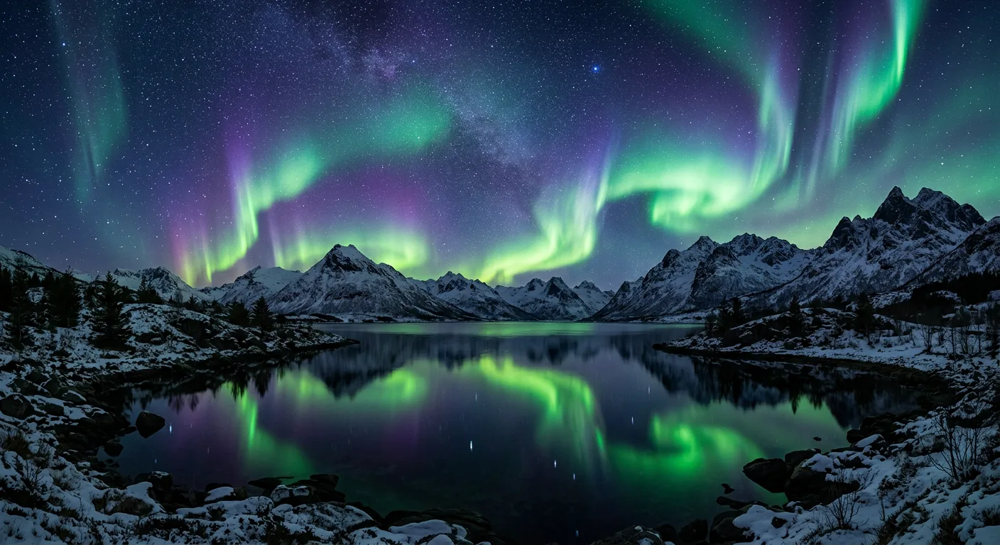

The light that
answers the dark
The aurora is not light falling, but light returning: solar wind streaming for days across ninety-three million miles, striking the thin edge of the atmosphere, and setting oxygen and nitrogen glowing green and violet a hundred kilometers over our heads. It has no schedule a calendar can hold and no fixed address — only high latitudes, clear cold air, and a willingness to stand outside long after the sensible hour to look up. People have read it as omen, as ancestors, as fire on the underside of the sky. It is, more plainly, the planet's magnetic field doing the one thing static air and closed rooms never let us see: catching a storm from the sun and answering it, silently, in color.
Aurora forecasts — NOAA Space Weather Prediction Center ↗